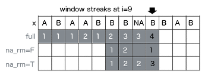

This tutorial presents built-in functions in runner package which goal is to maximize performance. Even if one can apply any R function with runner::runner, built-in functions are multiple times faster than R equivalent. Before you proceed further to this tutorial, make sure you know what the “running functions are”.
Running aggregations
Running <mean,sum,min,max>_run
Runner provides basic aggregation methods calculated within running windows. Below example showing some functions behavior for different arguments setup. min_run calculates current minimum for all elements of the vector. Let’s take a look at 8’th element of the vector which min_run is calculated on.
First setup uses default values, so algorithm is looking for minimum value in all elements before actual (i=8). By default missing values are removed before calculations by argument na_rm = TRUE, and also window is not specified. The default is equivalent of base::cummin with additional option to ignore NA values. In second example within window k=5, the lowest value is -3. In the last example minimum is not available due to existence of NA. Graphical example is reproduced below in the code.

library(runner)
x <- c(1, -5, 1, -3, NA, NA, NA, 1, -1, NA, -2, 3)
data.frame(
x,
default = min_run(x, na_rm = TRUE),
k_5 = min_run(x, k = 5, na_rm = TRUE),
narm_f = min_run(x, na_rm = FALSE))## x default k_5 narm_f
## 1 1 1 1 1
## 2 -5 -5 -5 -5
## 3 1 -5 -5 -5
## 4 -3 -5 -5 -5
## 5 NA -5 -5 NA
## 6 NA -5 -5 NA
## 7 NA -5 -3 NA
## 8 1 -5 -3 NA
## 9 -1 -5 -1 NA
## 10 NA -5 -1 NA
## 11 -2 -5 -2 NA
## 12 3 -5 -2 NAIn above example constant k = 5 has been used which means that for each element, current minimum is calculated on last 5-elements. It may happen that one can have time series where elements are not equally spaced in time, which effects in k = 5 not constant. In example below 5-days sum is calculated. To achieve this, one should put date variable to idx argument.
Illustration below shows two sums calculated in 5-days window span. In both cases 5-days fit in 3-elements windows. Equivalent R code below.

x <- c(-0.5910, 0.0266, -1.5166, -1.3627, 1.1785, -0.9342, 1.3236, 0.6249)
idx <- as.Date(c("1970-01-03", "1970-01-06", "1970-01-09", "1970-01-12",
"1970-01-13", "1970-01-16", "1970-01-17", "1970-01-19"))
sum_run(x, k = 5, idx = idx)## [1] -0.5910 -0.5644 -1.4900 -2.8793 -1.7008 -1.1184 1.5679 1.0143Specifying lag argument shift of the window by number of elements or time periods (if idx is specified).
x <- c(-0.5910, 0.0266, -1.5166, -1.3627, 1.1785, -0.9342, 1.3236, 0.6249)
idx <- as.Date(c("1970-01-03", "1970-01-06", "1970-01-09", "1970-01-12",
"1970-01-13", "1970-01-16", "1970-01-17", "1970-01-19"))
sum_run(x, k = 5, lag = 2, idx = idx)## [1] NA -0.5910 -0.5644 -1.4900 -1.5166 -0.1842 -0.1842 1.5679Running streak
To count consecutive elements in specified window one can use streak_run. Following figure illustrates how streak is calculated with three different options setup for 9th element of the input vector x. First shows default configuration, with full window and na_rm = TRUE. Second example count within k = 4 window with count reset on NA. Last example counting streak with continuation after NA. Visualization also supported with corresponding R code.

x <- c("A", "B", "A", "A", "B", "B", "B", NA, "B", "B", "A", "B")
data.frame(
x,
s0 = streak_run(x),
s1 = streak_run(x, k = 4, na_rm = FALSE),
s2 = streak_run(x, k = 4))## x s0 s1 s2
## 1 A 1 1 1
## 2 B 1 1 1
## 3 A 1 1 1
## 4 A 2 2 2
## 5 B 1 1 1
## 6 B 2 2 2
## 7 B 3 3 3
## 8 <NA> 3 NA 3
## 9 B 4 NA 3
## 10 B 5 NA 3
## 11 A 1 1 1
## 12 B 1 1 1Streak is often used in sports to count number of wins or loses of the team/player. To count consecutive wins or loses in 5-days period, one have to specify k = 5 and include dates into idx argument. Specifying lag shifts window bounds by number of elements or time periods (if idx is specified).
x <- c("W", "W", "L", "L", "L", "W", "L", "L")
idx <- as.Date(c("2019-01-03", "2019-01-06", "2019-01-09", "2019-01-12",
"2019-01-13", "2019-01-16", "2019-01-17", "2019-01-19"))
data.frame(
idx,
x,
streak_5d = streak_run(x, k = 5, idx = idx),
streak_5d_lag = streak_run(x, k = 5, lag = 1, idx = idx))## idx x streak_5d streak_5d_lag
## 1 2019-01-03 W 1 NA
## 2 2019-01-06 W 2 1
## 3 2019-01-09 L 1 1
## 4 2019-01-12 L 2 1
## 5 2019-01-13 L 3 2
## 6 2019-01-16 W 1 2
## 7 2019-01-17 L 1 1
## 8 2019-01-19 L 2 1Utility functions
Improved lag
Idea of lag_run is the same as well known stats::lag, with distinction that lag_run can depend on time or any other indexes passed to idx argument. This means that lag_run can shift by lag elements of the vector or by lag time periods (if idx is specified).
x <- c(-0.5910, 0.0266, -1.5166, -1.3627, 1.1785, -0.9342, 1.3236, 0.6249)
idx <- as.Date(c("1970-01-03", "1970-01-06", "1970-01-09", "1970-01-12",
"1970-01-13", "1970-01-16", "1970-01-17", "1970-01-19"))
lag_run(x, lag = 3, idx = idx)## [1] NA -0.5910 0.0266 -1.5166 NA 1.1785 NA -0.9342Filling missing values
Function used to replace NA with previous non-NA element. To understand how fill_run works, take a look on illustration. Row ‘x’ represents input, and another rows represent output with NA replaced by fill_run with different options setup (run_for_first = TRUE and only_within = TRUE respectively). By default, fill_run replaces all NA if they were preceded by any value. If NA appeared in the beginning of the vector then it would not be replaced. But if user specify run_for_first = TRUE initial empty values values will be replaced by next non-empty value. Option only_within = TRUE means that NA values would be replaced if they were surrounded by pair of identical values. No windows provided in this functionality.

x <- c(NA, NA, "b", "b", "a", NA, NA, "a", "b", NA, "a", "b")
data.frame(x,
f1 = fill_run(x),
f2 = fill_run(x,run_for_first = TRUE),
f3 = fill_run(x, only_within = TRUE))## x f1 f2 f3
## 1 <NA> <NA> b <NA>
## 2 <NA> <NA> b <NA>
## 3 b b b b
## 4 b b b b
## 5 a a a a
## 6 <NA> a a a
## 7 <NA> a a a
## 8 a a a a
## 9 b b b b
## 10 <NA> b b <NA>
## 11 a a a a
## 12 b b b bRunning which
To obtain index number of element matching some condition in window, one can use which_run, which returns index of TRUE element appeared before n-th element of a vector. If na_rm = TRUE is specified, missing is treated as FALSE, and is ignored while searching for TRUE. While user set na_rm = FALSE like in second example, function returns NA, because in following window TRUE appears after missing and it’s impossible to be certain which is first (missing is an element of unknown value - could be TRUE or FALSE).

x <- c(T, T, T, F, NA, T, F, NA, T, F, T, F)
data.frame(
x,
s0 = which_run(x, which = "first"),
s1 = which_run(x, na_rm = FALSE, k = 5, which = "first"),
s2 = which_run(x, k = 5, which = "last"))## x s0 s1 s2
## 1 TRUE 1 1 1
## 2 TRUE 1 1 2
## 3 TRUE 1 1 3
## 4 FALSE 1 1 3
## 5 NA 1 1 3
## 6 TRUE 1 2 6
## 7 FALSE 1 3 6
## 8 NA 1 NA 6
## 9 TRUE 1 NA 9
## 10 FALSE 1 6 9
## 11 TRUE 1 NA 11
## 12 FALSE 1 NA 11which argument (‘first’ or ‘last’) used with which_run determines which index of matching element should be returned from window. In below illustration in k = 4 elements window there are two TRUE values, and depending on which argument output is equal 2 or 4.